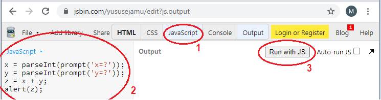
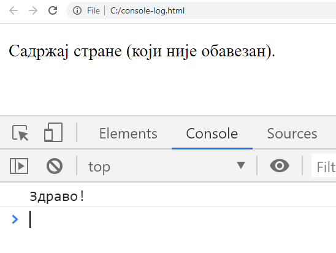

Извршавање JavaScript кода¶
Пре него што „заронимо” у правила писања програма на језику JavaScript, погледајмо прво неколико начина на које можемо да извршавамо програме које будемо писали.
Приликом извршавања програма, наравно, желимо да видимо ефекат тог извршавања. То најћешће значи (бар у почетним примерима) да програм треба на неки начин да прикаже резултат свог рада.
Приказивање податка
Један начин приказивања податка, који функционише при свим начинима извршавања које ћемо користити је функција alert. Оно што желимо да испишемо треба навести као агрумент ове функције:
alert('Zdravo');
Учитавање податка
Програм врло често треба и да прихвати податке од корисника. У ту сврху ћемо користити функцију prompt. Ова функција враћа текст који корисник унесе. Ако је потребно да од корисника прихватимо бројчани податак, можемо да користимо функције parseFloat и parseInt за претварање (конвертовање) текста у реалан, односно цео број. JavaScript интерпретер је довољно „паметан” да често и сам уме да претвори стринг у број када је то потребно, па функције parseFloat и parseInt често нису неопходне, али је са њима програм чистији и јаснији. Употреба ових функција ће бити илустрована у примеру који следи, а који ћемо извршити на разне начине. У том примеру, програм прихвата од корисника два цела броја и исписује збир унетих бројева.
Извршавање JavaScript кода у страницама овог курса¶
У уводном тексту смо већ видели прозор попут овога испод, у коме можемо да мењамо и извршавамо дате JavaScript програме. Програм се извршава кликом на дугме „Покрени програм”.
Ово је веома згодан и удобан начин да брзо видимо како ради дати пример, или да на датом примеру испробамо малу модификацију. То, међутим, не значи да примере треба извршавати само у овом окружењу, напротив! Важно је да читаоци умеју да покрену своје програме и ван страница овог курса. Зато препоручујемо читаоцима да често пробају и друге начине извршавања својих JavaScript програма, а нарочито извршавање у оквиру сопственог (ма како малог и једноставног) веб пројекта, као што је објашњено у наставку.
Извршавање JavaScript кода на другим сајтовима¶
Сајтове попут http://jsbin.com, http://jsfiddle.net или http://js.do смо већ користили да испробамо функционисање HTML i CSS кода. Показаћемо како можемо да извршимо JavaScript програм на првом од ових сајтова (извршавање на осталим сајтовима је врло слично).
Кликните на таб на коме пише „JavaScript”, затим унесите дате наредбе и на крају кликните на дугме „Run with JS”. Ови кораци су на слици означени црвеном бојом и нумерисани бројевима 1, 2 и 3.
{kind=link}
Извршавање JavaScript кода у вашим веб странама¶
Основна идеја учења програмског језика JavaScript је да наше веб стране учинимо динамичнијим. У складу са тиме, извршавање JavaScript програма у веб странама је најважнији разлог за учење језика JavaScript и најчешћи начин употребе овог језика у пракси.
Поново наглашавамо да је извршавање JavaScript програма у оквиру страница овог курса или на специјализованим сајтовима само олакшица при учењу програмирања, јер су ти начини мало бржи и удобнији од покретања кроз сопствене веб стране. Како је градиво у овом курсу веома усмерено ка практичном раду, подсећамо вас на препоруку да бар повремено покрећете JavaScript програме у оквиру својих веб страна. Знања која усвојите и вештине које стенкенте кроз овај курс највероватније ћете демонстрирати кроз мали веб пројекат, у коме ће JavaScript програми бити покретани у вашим веб странама.
За овај начин рада потребан вам је било који програм за уређивање текста (едитор текста), као што је Notepad. Имајте на уму да постоји и велики број напредних едитора који су бесплатни за прузимање, а који су прилагођени писању кода (на пример, VSCode, Notepad++ или Sublime).
Погледајмо сада како можете да покренете JavaScript програм у вашој сопственој веб страници. Прво направите на свом рачунару фајл sabiranje.js са овим садржајем:
x = parseInt(prompt('x=?'));
y = parseInt(prompt('y=?'));
z = x + y;
alert(z);
Затим у истом директоријуму направите фајл sabiranje.html у коме ће се налазити овај HTML кôд:
<!DOCTYPE html>
<html>
<head>
<script type="text/javascript" src="sabiranje.js">
</script>
</head>
<body>
<p>Садржај стране (који није обавезан).</p>
</body>
</html>
Убацивањем HTML елемента script смо веб страни придружили екстерни фајл sabiranje.js који садржи JavaScript програм. Ово је слично као што смо до сада убацивањем елемента link са атрибутом rel="stylesheet.css" придруживали веб страни екстерне CSS фајлове са дефинисаним стилом.
Сада отворите фајл sabiranje.html у веб прегледачу, као што сте то и до сада радили. JavaScript програм ће бити извршен приликом отварања.
Постоји и могућност да JavaScript кôд сместимо директно у HTML елемент script, уместо у засебан фајл. У том случају би фајл sabiranje.html изгледао овако:
Овај фајл можете такође да направите на свом рачунару и да га отворите у веб прегледачу. JavaScript програм ће и у овој варијанти бити извршен при отварању веб документа.
Поменимо на крају да овим није исцрпљен списак начина да се покрене JavaScript програм. Примера ради, JavaScript програми се могу покретати и из командног прозора, дакле без веб прегледача. Ми се у оквиру овог курса нећемо бавити оваквим начином покретања JavaScript програма, зато што он није удобнији од већ поменутих начина, а могуће области примене оваквог поступка превазилазе оквире овог курса. Заинтересовани читаоци могу пронаћи више информација на сајту W3Schools у делу под именом node.js.
Грешке у програму¶
Као и сваки програмски језик, JavaScript има своју синтаксу, то јест правила писања појединих наредби и целог програма. Када неки део програма није написан по правилима језика, то је синтаксна грешка. На пример, у следећем програму запис 3 = a; је неисправна наредба, што значи да у програму имамо синтаксну грешку. Покрените програм да бисте видели како изгледа порука о грешци:
Порука о грешци се појављује и када покрећемо програм у оквиру веб стране, мада није одмах видљива. Направите на свом рачунару HTML фајл са следећим садржајем (ми смо наш фајл назвали a.html):
Када прегледачем отворимо веб страну са програмом за који сумњамо да је синтаксно неисправан, треба да отворимо у прегледачу додатни прозор са алатом за развој (енгл. developer tools window), у коме се појављују разне додатне информације. Код већине прегледача то се постиже притиском тастера F12 или Ctrl+Shift+I, или кроз мени (дугме ⋮, …, или ≡ горе десно, опција Tools/Developer Tools или слично). Када изаберемо таб са натписом Console (конзола, означен на слици), видећемо и поруке о могућим синтаксним грешкама:
{kind=link}
На крају поруке о грешци стоји a.html:5, што значи да грешка настаје извршавањем линије 5 у фајлу a.html. Ове информације нам помажу да разумемо зашто је програм неисправан и шта треба да радимо да бисмо отклонили грешке.
Баг је грешка која не спречава проргам да се изврши, али он не ради онако како очекујемо. То значи да је програм написан по правилима језика (синтаксно је исправан), али тим програмом нисмо рекли рачунару да ради оно што смо намеравали, већ нешто друго (програм је семантички неисправан). Овакве грешке је теже открити, јер не добијамо никакве поруке о томе шта може да буде погрешно. Примери багова су исписивање вредности друге променљиве (а не оне која нас интересује), употреба погрешне операције (на пример + уместо -) итд.
При откривању багова (дебаговању) можемо да убацимо у програм додатне позиве функције alert, која ће нам помоћи да пратимо вредности у програму и редослед извршавања наредби. Након што откријемо баг, ове додатне позиве функције alert треба уклонити из програма.
Када дебагујемо програм, можемо да користимо наредбу која исписује текст у конзолу, тј. у исти простор у коме нам веб прегледач приказује поруке о грешкама у програму. У коду који следи, једина наредба у програму (наредба console.log('Здраво!');) исписује текст ’Здраво!’ у конзолу.
<!DOCTYPE html>
<html>
<head>
<script>
console.log('Здраво!');
</script>
</head>
<body>
<p>Садржај стране (који није обавезан).</p>
</body>
</html>
Ово можете да проверите тако што копирате дати кôд у фајл на свом рачунару (екстензија тог фајла треба да буде html), отворите га у веб прегледачу и притиснете тастер F12 да бисте видели конзолу.
{kind=link}